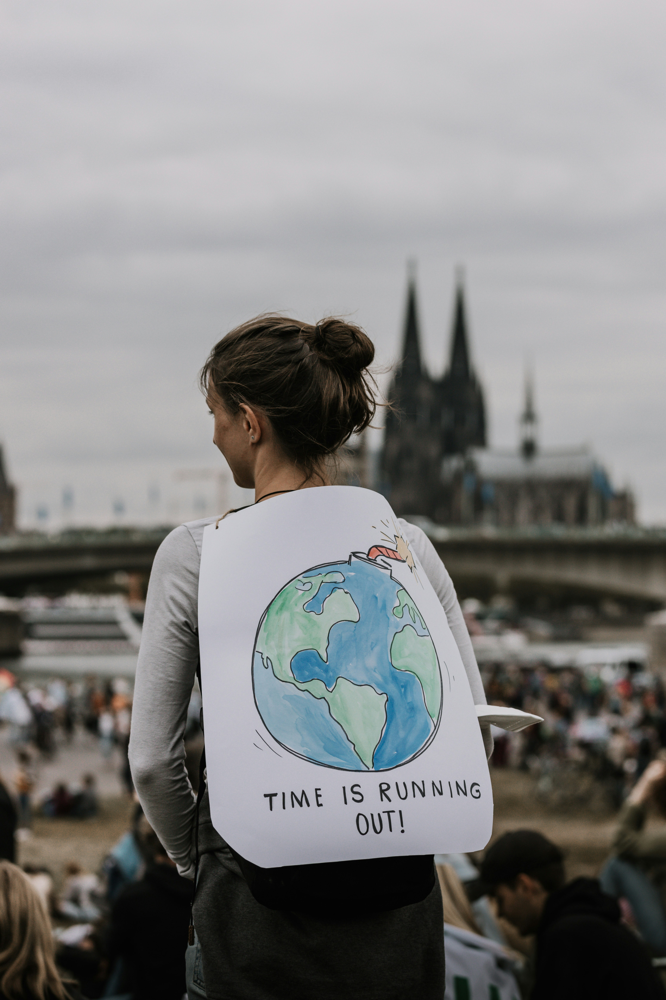

Sobre nós.
Conteúdo Educacional
Acesso a informações sobre as mudanças climáticas e entender seu impacto no planeta.
Dicas Práticas
Aprenda como aplicar medidas viáveis em direção à sustentabilidade em sua rotina.
Ação Comunitária
Junte-se a iniciativas e campanhas que fazem a diferença no seu entorno.

Entenda as Mudanças Climáticas
As mudanças climáticas referem-se a alterações significativas nas condições climáticas globais que ocorrem em escalas de tempo prolongadas. Saiba mais nos links abaixo.
Dicas Práticas de Sustentabilidade
Implemente essas ações simples para fazer uma diferença significativa:
- Transporte: Opte por transportes públicos, bicicleta ou carona solidária para reduzir emissões de CO2.
- Consumo de energia: Troque lâmpadas comuns por LED e invista em eletrodomésticos de baixo consumo.
- Redução de resíduos: Prefira produtos com menos embalagens e pratique a compostagem doméstica.
- Alimentação sustentável: Reduza o consumo de carne e escolha produtos locais e da estação.
Participe de Ações e Conheça ONGs
- Instituto Mapinguari - Focada na defesa, preservação e conservação do meio ambiente.
- Instituto Clima e Sociedade - Organização que apoia projetos e instituições dedicados ao enfrentamento das mudanças climáticas
- Oceana - Proteção e restauração dos oceanos em uma escala global.
Perguntas Frequentes
O que é o EcoAção?
Nós somos um portal web dedicado a aumentar a conscientização e promover ações contra as mudanças climáticas.
A mudança climática é realmente tão séria?
Sim, os efeitos da mudança climática são significativos e requerem ação imediata para mitigar.
Pequenas ações podem fazer a diferença?
Com certeza! Cada pequena ação contribui para um impacto maior quando combinadas.
Como posso contribuir?
Você pode contribuir seguindo nossas dicas práticas e participando de iniciativas comunitárias.
Como o EcoAção ajuda?
Nós fornecemos recursos e uma plataforma para aprendizado e ação coletiva.
Com que frequência as informações são atualizadas?
Nós regularmente atualizamos nosso conteúdo para garantir relevância e precisão.